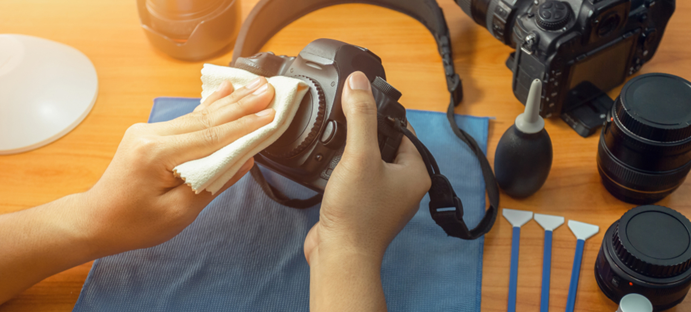
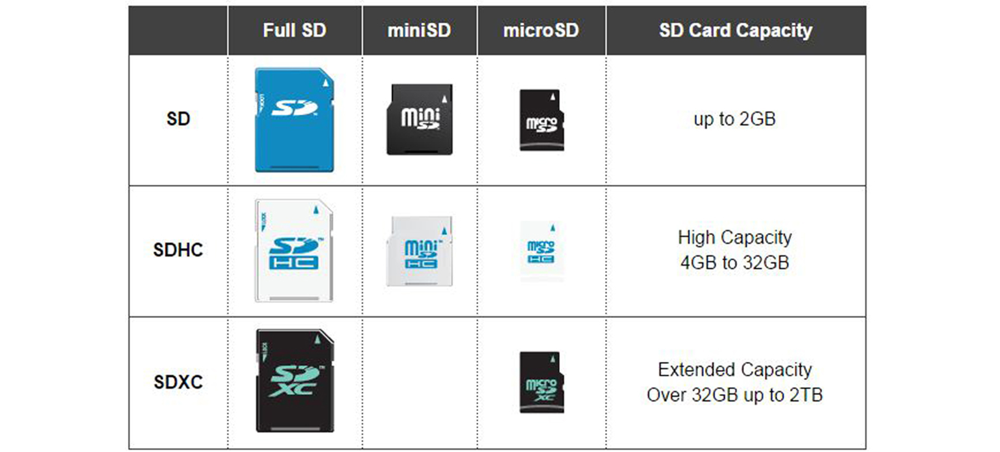
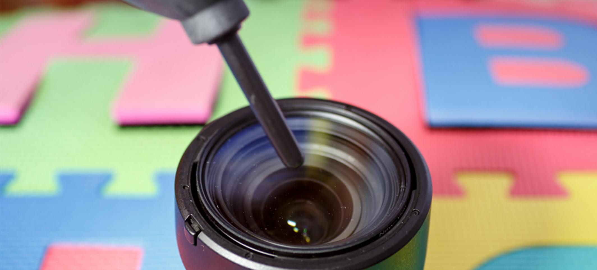

10 Oct 2019
Author : Arm Suphakit
การเลือกซื้อ SD Card หลายคนก็ยังเลือกไม่ถูกเหมือนกันนะ เพราะว่าความจุเยอะแล้ว ทำไมราคาถูก โดนหลอกหรือเปล่า หรือบางตัวบอกความเร็วสูง เอามาใช้ อ้าวเห้ย ไม่เหมือนที่คุยกันไว้นี่นา ทำไมช้าจัง ที่จริงแล้วการ์ดแต่ละตัวและตัวเลขทางการตลาด กับการใช้งานจริงมันต้องแยกแยะนะ สิ่งสำคัญคือต้องอ่านข้อมูลการ์ดให้เป็น ใน Blog นี้ จะมาบอกรายละเอียดให้เลือกซื้อได้ถูกกัน
1. ชื่อแบรนด์ของการ์ด และซีรีย์ของการ์ดในแบรนด์นั้น
ชื่อแบรนด์ของ SC Card ซึ่งมันมักจะตามมาด้วยชื่อซีรีย์ ซึ่งจะทำให้เรารู้ได้คร่าว ๆ ว่าการ์ดนั้นมันเป็นการ์ดคลาสไหน กลุ่มไหน ในแบรนด์นั้น ๆ เวลาที่ซื้อจะได้รู้เลย อย่าง Sandisk มันก็จะมีรุ่น Extreme Pro อยู่ เป็นต้น ข้อสังเกต แต่ละแบรนด์ใช้ชื่อรุ่นไม่เหมือนกัน และมาตรฐานของแต่ละซีรีย์ในแต่ละแบรนด์ไม่เหมือนกัน แล้วแบบนี้เวลาเราซื้อเราก็ต้องเทียบรุ่นในแต่ละยี่ห้อเพื่อดูว่ารุ่นไหนคุ้มสุด ตอบโจทย์งานที่สุดถูกไหม เพราะงั้นมันเลยต้องมีรายละเอียดที่มากกว่านี้ (อ่านต่อด้านล่างเลย)
2. ความเร็วสูงสุดที่การ์ดตัวนั้นอ่านได้
ตัวเลขบน SD Card นี้จะบ่งบอกความเร็วในการอ่านสูงสุดที่การ์ดตัวนี้สามารถทำได้ ซึ่งการใช้งานจริงมันต้องเร็วทั้งความเร็วในการเขียน และ ความเร็วในการอ่านด้วย ดังนั้นตายกันมาเยอะกับตัวเลขบนการ์ด เห็นเขียนเยอะ ๆ ก็ซัดเลย หารู้ไม่ข้อมูลแค่นี้ไม่พอนะ ความเร็วในการเขียนถ้ารุ่นที่เร็วจริงอย่าง Sony เนี่ย มันจะเขียนตรง ๆ เลย เพราะมันโชว์พลังความสามารถที่เร็วสุด ๆ และแพงสุด ๆ ไว้ เขาเลยกล้าโชว์ แต่ว่ารุ่นที่ไม่โชว์เนี่ยให้เราพลิกหลังกล่องมีแน่นอนครับ เขาจะบอกว่าความเร็วในการอ่านเท่าไหร่และความเร็วในการเขียนเท่าไหร่ แค่นี้ก็ไม่พลาดแล้ว
3. ขนาดความจุของการ์ด
สรุปง่าย ๆ เลย คือ ความจุเท่าไหร่ก็จุได้เยอะมากเท่านั้นครับ ยิ่งความจุเยอะ ก็เก็บข้อมูลได้เยอะครับ เดี๋ยววิธีการเลือกให้เหมาะสมเรามาดูช่วงต่อไปของบทความ
4. รูปแบบของการ์ด
รูปแบบของการ์ดจะออกแบบตามที่กล้องต้องการ ส่วนมากกล้องจะใช้รูปแบบ SD กัน แต่ก็มีบางรุ่นที่ใช้แตกต่างไป เช่น CompactFlash (CF) พบได้ในรุ่นระดับสูง MicroSD ใช้ในกล้องตัวเล็ก ๆ เช่น GoPro หรือ MemoryStick ซึ่งเป็นมาตรฐานของ Sony ก็พบได้ในกล้องของ Sony แต่ไม่ค่อยได้รับความนิยมแล้ว นอกจากนี้ SD ยังแบ่งออกเป็นอีก 3 ประเภทใหญ่ ๆ อีก ดังตาราง
รูปแบบของการ์ดจะออกแบบตามที่กล้องต้องการ ส่วนมากกล้องจะใช้รูปแบบ SD กัน แต่ก็มีบางรุ่นที่ใช้แตกต่างไป เช่น CompactFlash (CF) พบได้ในรุ่นระดับสูง MicroSD ใช้ในกล้องตัวเล็ก ๆ เช่น GoPro หรือ MemoryStick ซึ่งเป็นมาตรฐานของ Sony ก็พบได้ในกล้องของ Sony แต่ไม่ค่อยได้รับความนิยมแล้ว นอกจากนี้ SD ยังแบ่งออกเป็นอีก 3 ประเภทใหญ่ ๆ อีก ดังตาราง
SDHC – Secure Digital High Capacity สังเกตคำว่า “High Capacity” คือเป็นการ์ดที่ออกแบบมาให้รองรับความจุสูงแล้ว โดยความจุจะอยู่ที่ 4GB ไม่เกิน 32GB ครับ และรูปแบบการเก็บไฟล์จะเป็น FAT32 (รูปแบบการเก็บไฟล์รับรู้ไว้ก็พอครับ พวกสายคอมเขาจะลงลึกพวกนี้กัน เรา User ไม่ต้องลงลึกขนาดนั้นเนอะ)
SDXC – Secure Digital eXtended Capacity สังเกตคำว่า “eXtended Capacity” คือการ์ดที่ออกแบบมาให้รับความจุได้สูงมาก (สูงโคตร ๆ จนเอื้อมราคาไม่ไหวก็มี) เป็นการ์ดที่รับความจุได้ 32GB – 2TB น้อง ๆ HDD External เลย แต่ราคาก็บินไปไกลถึงดาวอังคารเช่นกัน การจัดเก็บไฟล์เป็นแบบ exFAT
5. ลักษณะบ่งบอกความเร็วการ์ด
พื้นฐานความเร็วของการ์ดจะใช้ชื่อเรียกมาตรฐานตามแบบคอมพิวเตอร์เลยคือ “Bus Speed” เปรียบเหมือนรถที่ยิ่งมีความเร็วเยอะ ยิ่งส่งข้อมูลได้เยอะ โดยนับหน่วยเป็น “ความเร็ว/วินาที”
เลขคลาสเป็นเลขแรกที่ใช้ดูความเร็วของการ์ดของเราจะใช้ดู โดยเลขนี้มีใช้มานานแล้ว
โดยตัวเลขจะบ่งบอกถึงความเร็วขั้นต่ำที่การ์ดสามารถเขียนได้ เช่น Class 10 ก็จะเขียนได้ขั้นต่ำ 10MB/s
(เมกกะไบต์ต่อวินาที)
คลาสความเร็ว UHS ของการ์ด
เลขนี้ก็บ่งบอกความเร็วการเขียนขั้นต่ำของการ์ดของเราเช่นกัน โดยมักจะเห็นคู่กันกับคลาสความเร็วแบบที่แล้ว
โดยใส่มาเพื่อรองรับมาตรฐานที่เร็วมากขึ้นเช่น Class 3 (ตัว U และมีเลข 3 ข้างใน)
ก็จะบอกว่าการ์ดเขียนได้ความเร็วต่ำสุด 30 MB/s และเพื่อการป้องกันการสับสนระหว่างมาตรฐานเก่าและใหม่
ชนิดของการ์ด
ชนิดของการ์ด SD ใช้มาตรฐานบัสแบบ UHS ชื่อเต็มคือ Ultra High Speed (Bus) เพราะงั้นตอนซื้อการ์ดให้ดูสัญลักษณ์ดี ๆ นะครับ มันจะมี I,II,III เป็นเลขโรมันที่บอกเวอร์ชันของมัน ซึ่งจะบ่งบอกไว้อยู่บนการ์ด
UHS-I (สัญลักษณ์ I) – Ultra High Speed Bus I - ความเร็วจะทำได้สูงสุดที่ 104MB/s (เมกกะไบต์ต่อวินาที)
UHS-II (สัญลักษณ์ II) – Ultra High Speed Bus II - ความเร็วจะทำได้สูงสุดที่ 312MB/s (เมกกะไบต์ต่อวินาที)
UHS-III (สัญลักษณ์ III) – Ultra High Speed Bus III - เน้นรองรับงานสเกลหนัก ๆ ความเร็วจะทำได้สูงสุดที่ ุ624MB/s (เมกกะไบต์ต่อวินาที)
ดูไว้ก่อนว่ากล้องเรารับการ์ดแบบไหน ตรงส่วนนี้ผมบอกได้แค่ว่าให้ดูจากหน้า Specification ในเว็บหรือว่าดูข้างกล่องก็ได้เนอะว่าเขารอรับ UHS-I หรือ UHS-II ครับ จากนั้นก็เลือกซื้อแบบนั้นมาใช้ได้เลย
ดูว่างานที่เราใช้มันต้องใช้เมมระดับไหน โดยเฉพาะงานวีดีโอ
เราดูได้ตามนี้เลยครับว่าเราใช้งานลักษณะไหน ถ้างานภาพนิ่งเนี่ย เลือกพวกการ์ด UHS-I ยืนพื้นไปเลย
ความเร็วในการเขียนสัก 90MB/s ก็โอเคเลยสำหรับกล้องกลุ่มโปร แต่ถ้าทั่วไปก็ความเร็วในการเขียนแค่ 45MB/s
ก็ได้ แต่ถ้างานวีดีโอผมให้ดูตามกราฟดีกว่าครับ ยิ่งเราเลือกการบันทึกที่ละเอียด
การ์ดก็ต้องแรงด้วยเพื่อเขียนข้อมูลให้ทันครับ
ให้เช็คความเร็วในการเขียนเสมอ อย่าเชื่อความเร็วในการอ่าน
ความเร็วหน้ากล่องมันมักจะเป็นตัวเลขทางการตลาดครับ คือเอาความเร็วในการอ่านสูงสุดมาเขียน
แนะนำให้อ่านข้างหลังกล่องครับ มันจะเขียนชัด ๆ เลยว่าความเร็วในการอ่านเท่าไหร่ เขียนเท่าไหร่
แล้วก็เทียบตารางดูว่างานเราใช้ความเร็วในการเขียนเท่านี้ตอบโจทย์เราได้ไหม